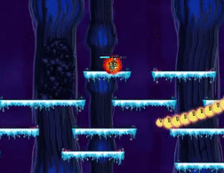
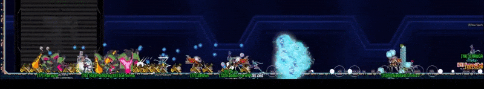
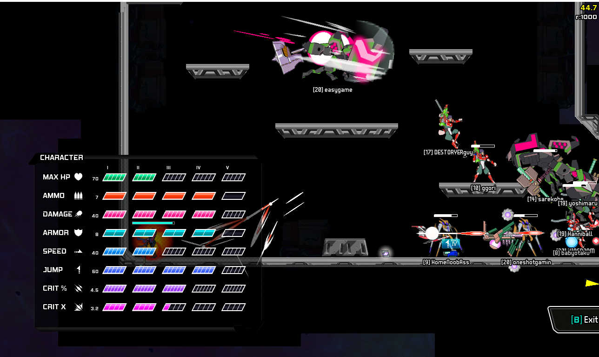
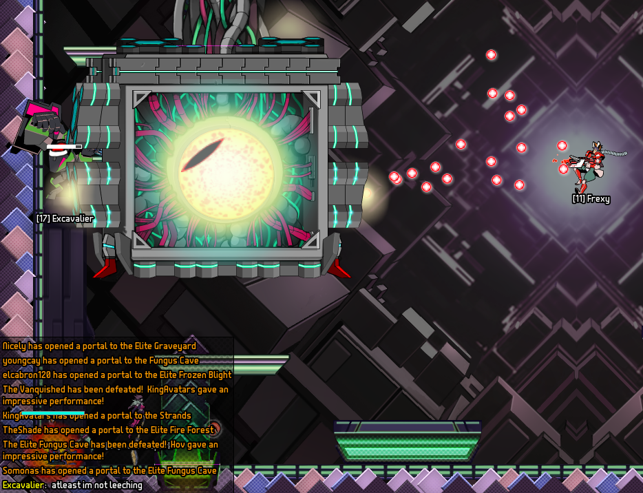
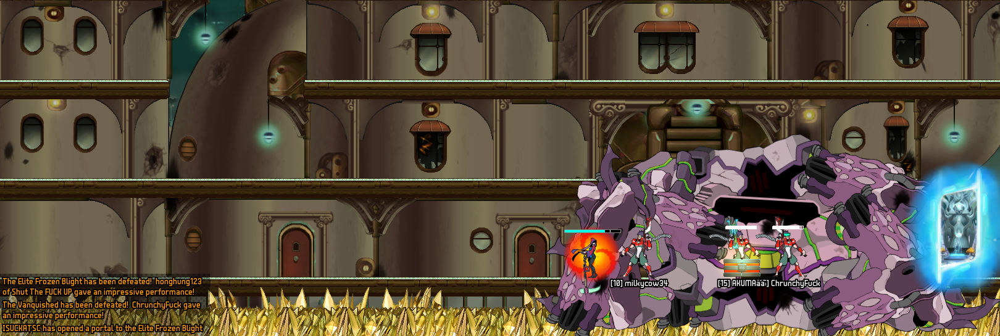
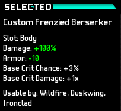
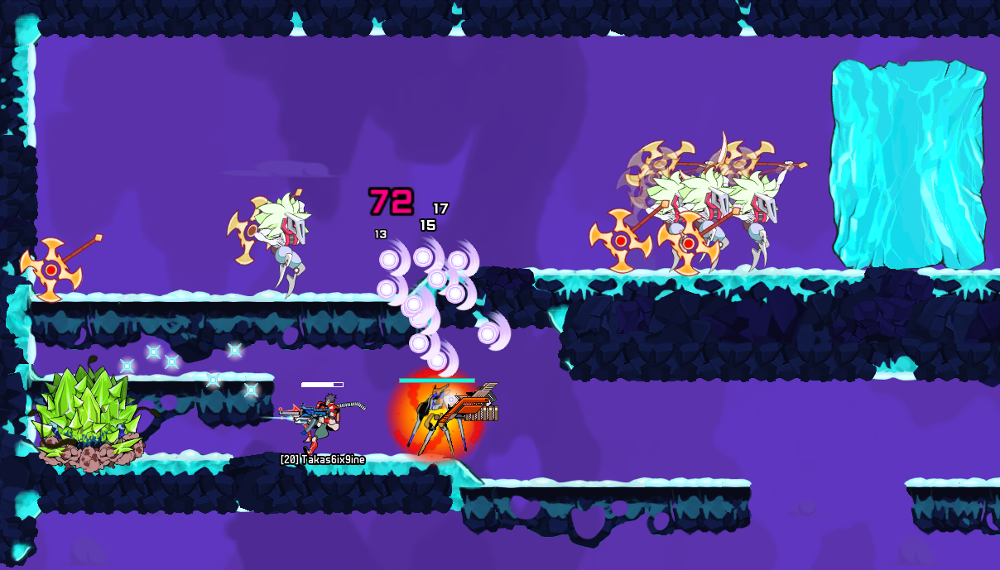

Building good communities is hard. It's easy to underestimate the benefits of a hostile environment.
I realized this while playing Starbreak, a Metroidvania platforming game. Starbreak is cooperative and massively-multiplayer. It's also totally free[1], with no in-game purchases or advertisements.
Modern video games are sterile, meaning that player actions do not significantly affect the game. Candy Crush is a good example. Success is due to luck, so a skilled player progresses at the same rate as everyone else. The primary determinant of player power is the amount of time spent playing.
Starbreak swims gloriously against this current. It's permadeath, meaning that once your character dies, it is gone forever. And it's easy to die in this game, with instant deaths and enemies that kill in two or three hits.
Getting hit by the big mouth is an instant death. So is falling off the map. Most players can expect to die once every few hours of play.
Here are some of its notable design decisions, and how they feed into its amicable community spirit.
The Silent Contract
There is not much chatting in Starbreak. It's rare for people to chat or to give directions or advice to other players during missions, because taking your fingers off the controls to chat is dangerous. These norms of silence carry over into the main lobby. Most chat is game-related, such as people getting a group together to do a particular mission. Whatever it is that makes the community so good, it's not the amount of socializing.
Despite this lack of chatting, Starbreak is extremely welcoming to new players, and people are cooperative and prosocial. There's a Chinese word, 默契,[2] which means "silent contract". It describes a happy situation where a group of people know each other well enough that they are able to cooperate towards a common goal without any overt communication. Teamwork happens through tacit understanding and familiarity with the missions. The constraint of no chatting in-mission leads to better cooperation, like visually impaired people having more sensitive touch and hearing.
Preparations for the hardest boss fight in the game. Wildfires (soldiers) lay landmines, Fabricators (robots) place turrets, Ironclads (shield guys) defend the team with their shields.
Rebuilding With Altruism, Rebuilding With Extra Altruism
Rebuilding after a death involves finding new equipment and regaining lost stats. There's no equipment trading, so equipment is only obtained by completing missions. To get stats, people usually run missions of increasing difficulty. After getting all stat boots from Tier 1 missions, the player would then do Tier 2 missions until those stats were complete, and then move on to higher tiers. While it's possible to immediately do the highest tier missions, this is too dangerous without having the stats from lower tiers.
Rebuilding stats like this takes a long time, and players have come up with ways of speeding things up. The first way is ask people for help "rebuilding". A friendly helper will log on to a powerful maxed out character and help you through the missions tier by tier. This makes it much safer for you because you can stay behind and collect the stat boosts safely.
My character recently died and needs stats, especially MAX HP, SPEED, and CRIT X. I can run Tier 3, 4, or 5 missions. Currently I'm following behind a small group as they clear enemies to the right of me, and I'll pick up the stats that drop from the enemies. The blue rectangular icon on HomeNoobAss's character is a JUMP stat boost.
The second way is even more remarkable. There are "secrets" which offer a large amount of stat boosts within a hidden room, often enough to gain half a tier of stats. Secrets are hard to find, and only appear 15% of the time in a mission.
There are two versions of the Starbreak game software, desktop Steam and web browser. The Steam version comes with the "Starbreak Plugin Engine" that can automatically detect and highlight secrets. One of the Tier 4 missions, Graveyard, can be rushed by fully powered characters to check for secrets in a minute or two. (Other missions need at least 8 minutes because of their linear map layout.)
The browser version has a bug that will create large amounts of stat boosts in a secret, usually enough to fill up a new character all the way to Tier 4. But it can't detect secrets because the plugin doesn't work on browser. So, what's a rebuilder to do? This is what players have come up with:
- A strong group of players using the plugin engine repeatedly run Graveyard missions and rush to check for secrets.
- Once they find a secret, they get a friend to broadcast this into the main lobby.
- People who need to rebuild then enter the mission on browser and use the bug to rebuild.
The strong players checking for secrets don't receive any reward for this. As far as I can tell, they do it because everyone's experienced the pain of losing a strong character, and it feels nice to help people recover from that.
No Leeching
Another example of prosociality deals with "leeching", a gaming term for people who grab goodies without contributing anything to a team effort. In Starbreak, every player gets their own copy of all loot drops, no matter who dealt the finishing blow. This means that the optimal way to build up your character is to stay behind the front lines, moving forward to pick up loot only when other people have cleared the map. It's considered acceptable to do when rebuilding, but frowned upon for leveled up characters who are expected to help the team.
This player isn't shielding teammates as well as he could. His counterargument is to admit that he might be playing badly, but at least he's not leeching!
Leeching is rare. The only reason people will stay behind leeching is if they're low on health and are waiting for health packs. Otherwise, everyone will be rushing to the front, eager to clear the map, even though this increases their chance of death. Playing aggressively is fun, but this isn't enough to make up for the massive downside of possible death.
I think the main reason is prestige. Playing bravely increases your chance of getting a "callout".
This group has just defeated the boss of the Vanquished mission. The bottom left corner sends a game-wide callout notification saying that "ChrunchyFuck gave an impressive performance", meaning that he contributed the most to the boss fight.[3]
Callouts provide no in-game benefits, but everyone sees them in the text window. Getting callout on a high tier mission is a mark of skill. Over time, players absorb the callout notifications and know which players are capable of handling the toughest missions.
To increase the chances of getting callout, people are even willing to put on equipment that lowers their defense in return for a big offensive boost! In a permadeath game, survival is more important than offense, so this is a serious sacrifice.
The Frenzied Berserker doubles your damage, at the cost of a significant armor penalty. The armor penalty is more severe than it appears, because the Frenzied Berserker takes the place of standard body armor.
Prestige provides community respect, recognition as a skilled player, and influence. Top players are able to "host" missions: because people trust them to play well, they're able to start whatever missions they want to do, and others will join in. This solves the coordination problem of getting enough people to ensure a successful mission. This prestige is also non-rivalrous, because having more people able to host missions benefits everyone.
Prosocial Mission Hosting
When expert players host missions, they do so prosocially. Anyone can open a new portal to a mission. A typical mission consists of around 3-5 regular rooms, a mid-boss, 2-3 more rooms, and then the boss. Regular rooms are easy but maps are often large and take time to traverse. Mid-bosses take significant amounts of time to complete, and bosses are the hardest. The boss drops the best items, and typically people are only interested in loot from the boss.
Portals close eight minutes after opening. An expert player can "rush", getting through rooms and mid-bosses quickly to reach the boss room. The rusher doesn't have access to the lobby chat, since he's in a mission. Instead, he messages someone in the lobby, who is the designated "caller". The caller will broadcast that the portal is ready, and people will enter the portal and instantly arrive at the boss room.
The rusher takes some risk by going through the map quickly, skipping enemies and leaving himself open. He also spends more time in the mission than the people who join, yet he doesn't receive any extra reward. Some particularly generous players will rush to the boss, let people join the mission, and then leave, forfeiting the chance for boss loot. They'll then open another portal and rush to the boss again. That way, when the original mission has been defeated, players can immediately join the next mission at the boss! This level of altruism is unheard of in other multiplayer games.
Why Is Starbreak So Friendly?
I'm interested in the game design characteristics that lead to such a prosocial community, and whether we can use these principles when building communities elsewhere. Five of them stand out.
Ability is legible. A skilled player gets frequent callouts, clears maps quickly, and rushes missions for others. If you die, it was because of your mistakes, you can't blame other people's mistakes for your deaths[4]. Compare this to MOBAs such as League of Legends, where you play in a team of five. In these games, it's easy to deflect blame for losses onto the mistakes of other people on your team, which leads to a toxic environment.
Barriers to communication encourage cooperation. The difficulty of communicating with teammates during a mission means that everyone feels a responsibility to do their part. A real-world parallel is the Hong Kong protest movement. The Hong Kong government aggressively jails protest leaders, leading to a leaderless movement and communication difficulties. Protesters have still been effective and they display high solidarity. Compare this to the Umbrella Movement, where too much communication and debate led to arguments and factional splits, causing the protests to dissipate.
Permadeath is brutal. A moment's inattention can wipe out dozens of hours of patient play. Combined with the difficulty of the missions, this creates a harsh environment for players. This leads to players directing their frustration towards the game and its 'unfair' challenges, instead of towards other players. Players band together to survive the harsh environment, and this provides fertile ground for prosocial norms to take root.
No visible game-awarded prizes means that most prestige comes from recognition by others. It's not very noticeable whether someone is using bad equipment or has the best items in the game. There's no leaderboard or level indicator. Players gain status by being altruistic and providing useful services for the community. People don't compete to climb to the top of the ladder, they compete to help everyone else.
Prestige is non-rivalrous. In other games, other good players are a threat because status relations are zero-sum. In Starbreak, because of its cooperative nature, prestige is positive sum.
I wonder if this is the appeal of many science fiction settings such as the bleak desert environment in the Dune series, the dystopian cyberpunk world of Neuromancer, and zombie apocalypses. Do social spaces need a certain amount of inherent menace? And is this why communities that seem complacent on the outside turn out to be so mean?
Play!
Check out Starbreak on browser or Steam! The plugin engine for steam is here.
Type "/friend Brob" to be notified when I'm online. I'm happy to help you learn the ropes!
1 ↩ After a bit of internet sleuthing, I pieced together a summary of why the game is free. Alex Carobus and Rob Shillingsburg first created Realm of the Mad God, a predecessor to Starbreak with an 8-bit art style. Like Starbreak, it was cooperative and massively-multiplayer, and gained a sizable cult following. For his next project, Alex decided to create a 32-bit version of Realm of the Mad God, this time in a Sci-Fi setting, and thus Starbreak was born. Alex feels very strongly about ethical monetization in games, and the only revenue sources in Starbreak were buying player cosmetics and convenience. Starbreak went into open beta in 2015, but unfortunately never had enough players for further development to make financial sense. Eventually, Alex removed the ability to pay and made the game completely free.
2 ↩ 默契 is mak6 kai3 in Jyutping and mo4 qi4 in Pinyin.
3 ↩ You may have noticed that honghung123 of Shut The FUCK UP and ChrunchyFuck have rather vulgar names. Shut The FUCK UP is a faction name, which fulfills the role of guilds in multiplayer games. This is a rather amusing design choice; Starbreak filters out coarse language in chats, but not in character names or faction names.
4 ↩ A common death that occurs through no fault of your own is when you're disconnected during a mission. You still can't blame others for your death, but you can blame the internet.